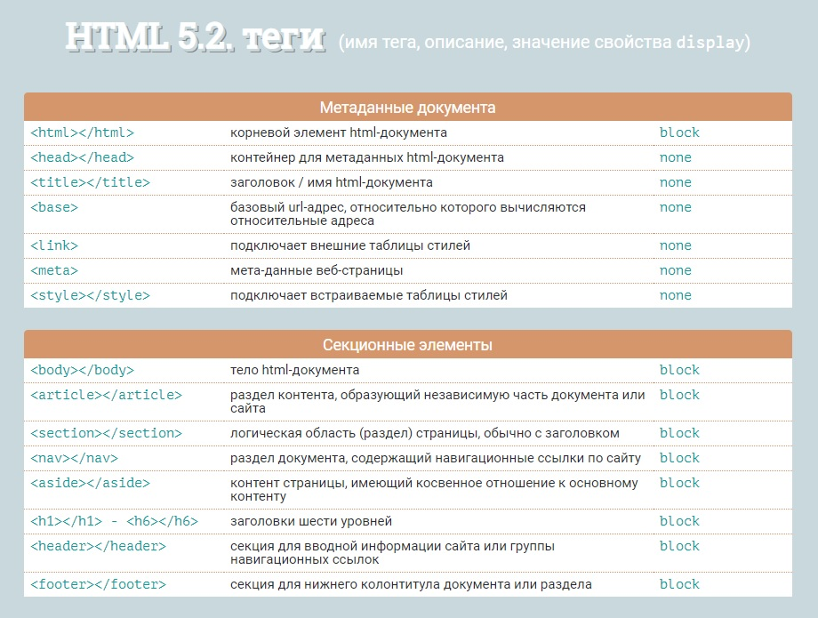

Полный список HTML-элементов
Таблица 1. HTML-элементы
|
Тег |
Описание |
|
<!--...--> |
Используется для добавления комментариев. |
|
<!DOCTYPE> |
Объявляет тип документа и предоставляет основную информацию для браузера - его язык и версия. |
|
<a> |
Создаёт гипертекстовые ссылки. |
|
<abbr> |
Определяет текст как аббревиатуру или акроним. Поясняющий текст задаётся с помощью атрибута title. |
|
<address> |
Задает контактные данные автора/владельца документа или статьи. Отображается в браузере курсивом. |
|
<area> |
Представляет собой гиперссылку с текстом, соответствующей определенной области на карте-изображении или активную область внутри карты-изображения. Всегда вложен внутрь тега <map>. |
|
<article> |
Раздел контента, который образует независимую часть документа или сайта, например, статья в журнале, запись в блоге, комментарий. |
|
<aside> |
Представляет контент страницы, который имеет косвенное отношение к основному контенту страницы/сайта. |
|
<audio> |
Загружает звуковой контент на веб-страницу. |
|
<b> |
Задает полужирное начертание отрывка текста, не придавая акцент или важность выделенному. |
|
<base> |
Задает базовый адрес (URL), относительно которого вычисляются все относительные адреса. Это поможет избежать проблем при переносе страницы в другое место, так как все ссылки будут работать, как и прежде. |
|
<bdi> |
Изолирует отрывок текста, написанный на языке, в котором чтение текста происходит справа налево, от остального текста. |
|
<bdo> |
Отображает текст в направлении, указанном в атрибуте dir, переопределяя текущее направление написания текста. |
|
<blockquote> |
Выделяет текст как цитату, применяется для описания больших цитат. |
|
<body> |
Представляет тело документа (содержимое, не относящееся к метаданным документа). |
|
<br> |
Перенос текста на новую строку. |
|
<button> |
Создает интерактивную кнопку. Внутрь тега можно поместить содержимое - текст или изображение. |
|
<canvas> |
Холст-контейнер для динамического отображения изображений, таких как простые изображения, диаграммы, графики и т.п. Для рисования используется скриптовый язык JavaScript. |
|
<caption> |
Добавляет подпись к таблице. Вставляется сразу после тега <table>. |
|
<cite> |
Используется для указания источника цитирования. Отображается курсивом. |
|
<code> |
Представляет фрагмент программного кода, отображается шрифтом семейства monospace. |
|
<col> |
Выбирает для форматирования один или несколько столбцов таблицы, не содержащих информацию одного типа. |
|
<colgroup> |
Создает структурную группу столбцов, выделяющую множество логически однородных ячеек. |
|
<data> |
Элемент используется для связывания значения атрибута value, которое представлено в машиночитаемом формате и может быть обработано компьютером, с содержимым тега. |
|
<datalist> |
Элемент-контейнер для выпадающего списка элемента <input>. Варианты значений помещаются в элементы <option>. |
|
<dd> |
Используется для описания термина из тега <dt>. |
|
<del> |
Помечает текст как удаленный, перечёркивая его. |
|
<details> |
Создаёт интерактивный виджет, который пользователь может открыть или закрыть. Представляет собой контейнер для контента, видимый заголовок виджета помещается в тег <summary>. |
|
<dfn> |
Определяет слово как термин, выделяя его курсивом. Текст, идущий следом, должен содержать расшифровку этого термина. |
|
<dialog> |
Интерактивный элемент, с которым взаимодействует пользователь для выполнения задачи, например, диалоговое окно, инспектор или окно. Без атрибута open не виден для пользователя. |
|
<div> |
Тег-контейнер для разделов HTML-документа. Используется для группировки блочных элементов с целью форматирования стилями. |
|
<dl> |
Тег-контейнер, внутри которого находятся термин и его описание. |
|
<dt> |
Используется для задания термина. |
|
<em> |
Выделяет важные фрагменты текста, отображая их курсивом. |
|
<embed> |
Тег-контейнер для встраивания внешнего интерактивного контента или плагина. |
|
<fieldset> |
Группирует связанные элементы в форме, рисуя рамку вокруг них. |
|
<figcaption> |
Заголовок/подпись для элемента <figure>. |
|
<figure> |
Самодостаточный тег-контейнер для такого контента как иллюстрации, диаграммы, фотографии, примеры кода, обычно с подписью. |
|
<footer> |
Определяет завершающую область (нижний колонтитул) документа или раздела. |
|
<form> |
Форма для сбора и отправки на сервер информации от пользователей. Не работает без атрибута action. |
|
<h1-h6> |
Создают заголовки шести уровней для связанных с ними разделов. |
|
<head> |
Элемент-контейнер для метаданных HTML-документа, таких как<title>, <meta>, <script>, <link>, <style>. |
|
<header> |
Секция для вводной информации сайта или группы навигационных ссылок. Может содержать один или несколько заголовков, логотип, информацию об авторе. |
|
<hr> |
Горизонтальная линия для тематического разделения параграфов. |
|
<html> |
Корневой элемент HTML-документа. Сообщает браузеру, что это HTML-документ. Является контейнером для всех остальных html-элементов. |
|
<i> |
Выделяет отрывок текста курсивом, не придавая ему дополнительный акцент. |
|
<iframe> |
Создает встроенный фрейм, загружая в текущий HTML-документ другой документ. |
|
<img> |
Встраивает изображения в HTML-документ с помощью атрибута src, значением которого является адрес встраиваемого изображения. |
|
<input> |
Создает многофункциональные поля формы, в которые пользователь может вводить данные. |
|
<ins> |
Выделяет текст подчеркиванием. Применяется для выделения изменений, вносимых в документ. |
|
<kbd> |
Выделяет текст, который должен быть введён пользователем с клавиатуры, шрифтом семейства monospace. |
|
<label> |
Добавляет текстовую метку для элемента <input>. |
|
<legend> |
Заголовок элементов формы, сгруппированных с помощью элемента <fieldset>. |
|
<li> |
Элемент маркированного или нумерованного списка. |
|
<link> |
Определяет отношения между документом и внешним ресурсом. Также используется для подключения внешних таблиц стилей. |
|
<main> |
Контейнер для основного уникального содержимого документа. На одной странице должно быть не более одного элемента <main>. |
|
<map> |
Создаёт активные области на карте-изображении. Является контейнером для элементов <area>. |
|
<mark> |
Выделяет фрагменты текста, помечая их желтым фоном. |
|
<meta> |
Используется для хранения дополнительной информации о странице. Эту информацию используют браузеры для обработки страницы, а поисковые системы — для ее индексации. В блоке <head> может быть несколько тегов <meta>, так как в зависимости от используемых атрибутов они несут разную информацию. |
|
<meter> |
Индикатор измерения в заданном диапазоне. |
|
<nav> |
Раздел документа, содержащий навигационные ссылки по сайту. |
|
<noscript> |
Определяет секцию, не поддерживающую сценарий (скрипт). |
|
<object> |
Контейнер для встраивания мультимедиа (например, аудио, видео, Java-апплеты, ActiveX, PDF и Flash). Также можно вставить другую веб-страницу в текущий HTML-документ. Для передачи параметров встраиваемого плагина используется тег <param>. |
|
<ol> |
Упорядоченный нумерованный список. Нумерация может быть числовая или алфавитная. |
|
<optgroup> |
Контейнер с заголовком для группы элементов <option>. |
|
<option> |
Определяет вариант/опцию для выбора в раскрывающемся списке <select>, <optgroup> или <datalist>. |
|
<output> |
Поле для вывода результата вычисления, рассчитанного с помощью скрипта. |
|
<p> |
Параграфы в тексте. |
|
<param> |
Определяет параметры для плагинов, встраиваемых с помощью элемента <object>. |
|
<picture> |
Элемент-контейнер, содержащий один элемент <img> и ноль или несколько элементов <source>. Сам по себе ничего не отображает. Дает возможность браузеру выбирать наиболее подходящее изображение. |
|
<pre> |
Выводит текст без форматирования, с сохранением пробелов и переносов текста. Может быть использован для отображения компьютерного кода, сообщения электронной почты и т.д. |
|
<progress> |
Индикатор выполнения задачи любого рода. |
|
<q> |
Определяет краткую цитату. |
|
<ruby> |
Контейнер для Восточно-Азиатских символов и их расшифровки. |
|
<rb> |
Определяет вложенный в него текст как базовый компонент аннотации. |
|
<rt> |
Добавляет краткую характеристику сверху или снизу от символов, заключенных в элементе <ruby>, выводится уменьшенным шрифтом. |
|
<rtc> |
Отмечает вложенный в него текст как дополнительную аннотацию. |
|
<rp> |
Выводит альтернативный текст в случае если браузер не поддерживает элемент <ruby>. |
|
<s> |
Отображает текст, не являющийся актуальным, перечеркнутым. |
|
<samp> |
Используется для вывода текста, представляющего результат выполнения программного кода или скрипта, а также системные сообщения. Отображается моноширинным шрифтом. |
|
<script> |
Используется для определения сценария на стороне клиента (обычно JavaScript). Содержит либо текст скрипта, либо указывает на внешний файл сценария с помощью атрибута src. |
|
<section> |
Определяет логическую область (раздел) страницы, обычно с заголовком. |
|
<select> |
Элемент управления, позволяющий выбирать значения из предложенного множества. Варианты значений помещаются в <option>. |
|
<small> |
Отображает текст шрифтом меньшего размера. |
|
<source> |
Указывает местоположение и тип альтернативных медиаресурсов для элементов <picture>, <video>, <audio>. |
|
<span> |
Контейнер для строчных элементов. Можно использовать для форматирования отрывков текста, например, выделения цветом отдельных слов. |
|
<strong> |
Расставляет акценты в тексте, выделяя полужирным. |
|
<style> |
Подключает встраиваемые таблицы стилей. |
|
<sub> |
Задает подстрочное написание символов, например, индекса элемента в химических формулах. |
|
<summary> |
Создаёт видимый заголовок для тега <details>. Отображается с закрашенным треугольником, кликнув по которому можно просмотреть подробности заголовка. |
|
<sup> |
Задает надстрочное написание символов. |
|
<table> |
Тег для создания таблицы. |
|
<tbody> |
Определяет тело таблицы. |
|
<td> |
Создает ячейку таблицы. |
|
<template> |
Используется для объявления фрагментов HTML-кода, которые могут быть клонированы и вставлены в документ скриптом. Содержимое тега не является его дочерним элементом. |
|
<textarea> |
Создает большие поля для ввода текста. |
|
<tfoot> |
Определяет нижний колонтитул таблицы. |
|
<th> |
Создает заголовок ячейки таблицы. |
|
<thead> |
Определяет заголовок таблицы. |
|
<time> |
Определяет дату/время. |
|
<title> |
Заголовок HTML-документа, отображаемый в верхней части строки заголовка браузера. Также может отображаться в результатах поиска, поэтому это следует принимать во внимание предоставление названия. |
|
<tr> |
Создает строку таблицы. |
|
<track> |
Добавляет субтитры для элементов <audio> и <video>. |
|
<u> |
Выделяет отрывок текста подчёркиванием, без дополнительного акцента. |
|
<ul> |
Создает маркированный список. |
|
<var> |
Выделяет переменные из программ, отображая их курсивом. |
|
<video> |
Добавляет на страницу видео-файлы. Поддерживает 3 видео формата: MP4, WebM, Ogg. |
|
<wbr> |
Указывает браузеру возможное место разрыва длинной строки. |
Таблица-шпаргалка с тегами
Для удобства пользования я сгруппировала теги по тематическим разделам, добавив значения свойства display для каждого тега. Чтобы перейти к таблице, кликните по рисунку.Рис. 1. Тематическая таблица тегов